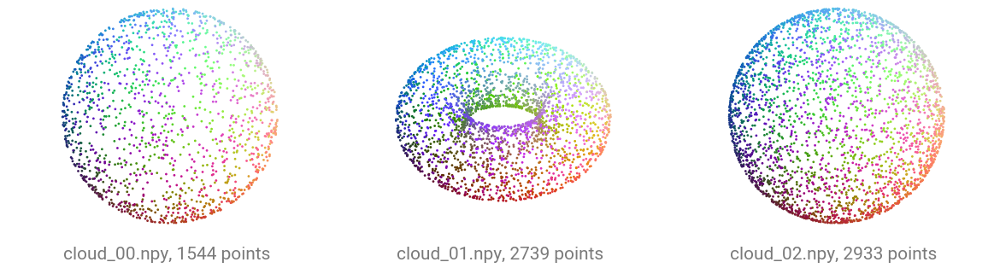
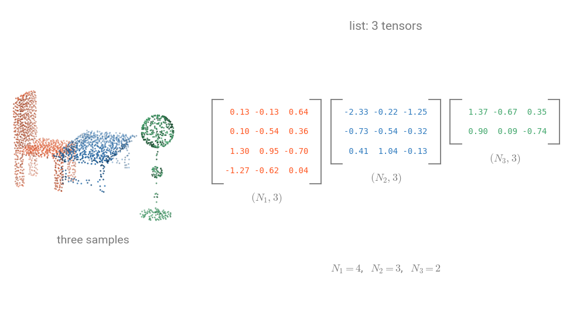
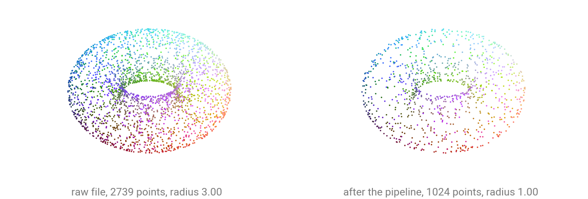

Use your own data¶
Open in Colab · Download notebook
This notebook will guide you on how to use your own data with torch-pointcloud and create a custom dataset, using either a standard torch.utils.data.Dataset or a custom PointCloudDataset, and how to link it to a DataLoader.
Setup¶
# On Colab:
# !pip install "torch-pointcloud"
# !pip install torch-scatter torch-cluster -f https://data.pyg.org/whl/torch-2.10.0+cu128.html
import torch
import torch_pointcloud as tp
torch.manual_seed(0)
print("torch-pointcloud", tp.__version__)
Data¶
Let's generate random donuts and spheres and save them to disk so that we can use them as a custom dataset.
import tempfile
from pathlib import Path
import numpy as np
import torch
def surface(num_points, torus):
"""Points on a torus or a unit sphere, colored by their own normalized position."""
u, v = np.random.rand(2, num_points) * (2 * np.pi)
height = np.sin(v) if torus else np.random.uniform(-1.0, 1.0, num_points)
ring = 2 + np.cos(v) if torus else np.sqrt(1.0 - height**2)
pos = np.stack([ring * np.cos(u), ring * np.sin(u), height], axis=1)
color = (pos - pos.min(axis=0)) / np.ptp(pos, axis=0)
return np.concatenate([pos, color], axis=1).astype("float32") # xyz + rgb
root = Path(tempfile.mkdtemp()) / "my_clouds"
root.mkdir(parents=True)
for i in range(6):
m = int(torch.randint(1500, 3000, (1,)))
np.save(root / f"cloud_{i:02d}.npy", surface(m, torus=i % 2 == 1))
sorted(p.name for p in root.glob("*.npy"))
import matplotlib.pyplot as plt
def show_clouds(clouds, titles, point_size=3.0):
_, axes = plt.subplots(1, len(clouds), figsize=(4.2 * len(clouds), 4.0), subplot_kw={"projection": "3d"})
for ax, cloud, title in zip(axes, clouds, titles):
pos = np.asarray(cloud["pos"])
ax.scatter(*pos.T, c=np.asarray(cloud["color"]), s=point_size, linewidths=0, depthshade=False)
ax.set_box_aspect(np.ptp(pos, axis=0))
ax.set_title(title, fontsize=10)
ax.set_axis_off()
plt.show()
clouds = [np.load(root / f"cloud_{i:02d}.npy") for i in range(3)]
show_clouds(
[{"pos": cloud[:, :3], "color": cloud[:, 3:6]} for cloud in clouds],
[f"cloud_{i:02d}.npy, {len(cloud)} points" for i, cloud in enumerate(clouds)],
)

Read the point counts in the panel titles: each file holds a different number of points, between 1500 and 3000. Packed batching is what handles that.
The standard keys¶
Return whichever of these your data has. Some datasets add their own keys on top, so check the documentation of the one you use.
| key | shape | meaning |
|---|---|---|
pos |
\((N, 3)\) | XYZ coordinates |
color |
\((N, 3)\) | RGB ([0, 255] or [0, 1]) |
normal |
\((N, 3)\) | surface normals |
segment |
\((N,)\) | per-point semantic labels |
label |
scalar | one class for the whole cloud |
A custom Dataset¶
A torch.utils.data.Dataset whose __getitem__ returns the dict is all you need. Pass an optional transform so preprocessing travels with the dataset.
from torch.utils.data import DataLoader, Dataset
class MyDataset(Dataset):
def __init__(self, root, transform=None):
self.files = sorted(Path(root).glob("*.npy"))
self.transform = transform
def __len__(self):
return len(self.files)
def __getitem__(self, i):
arr = torch.from_numpy(np.load(self.files[i]))
data = {"pos": arr[:, :3], "color": arr[:, 3:6]}
return self.transform(data) if self.transform is not None else data
dataset = MyDataset(root)
{k: tuple(v.shape) for k, v in dataset[0].items()}
Collate into a packed batch¶
collate concatenates the per-point tensors along axis 0 and builds the batch index that tags each point with its source cloud. Scene-level tensors (a scalar label) are stacked instead.

Padding adds points that were never measured and carries them through every layer. Packing keeps only the measured points, which is why \(N = N_1 + N_2 + N_3\) in the third form.
from torch_pointcloud.utils.data import collate
batch = collate([dataset[0], dataset[1], dataset[2]])
print({k: tuple(v.shape) for k, v in batch.items()})
print("clouds in batch:", int(batch["batch"].max()) + 1)
print("points from cloud 1:", int((batch["batch"] == 1).sum())) # recover one cloud by masking
A DataLoader¶
Pass collate as collate_fn and the standard DataLoader does the rest: shuffling, workers, batching.
dataloader = DataLoader(dataset, batch_size=3, shuffle=True, collate_fn=collate)
for i, batch in enumerate(dataloader):
print(f"step {i}: pos {tuple(batch['pos'].shape)}, clouds {int(batch['batch'].max()) + 1}")
You can also use the torch_pointcloud.utils.data.PointCloudDataLoader class, which is a wrapper around the standard DataLoader that handles the collation and packing of point clouds.
from torch_pointcloud.utils.data import PointCloudDataLoader
dataloader = PointCloudDataLoader(dataset, batch_size=3, shuffle=True)
for i, batch in enumerate(dataloader):
print(f"step {i}: pos {tuple(batch['pos'].shape)}, clouds {int(batch['batch'].max()) + 1}")
Notice how the new key batch is added to the dict after collation. By default, the collate function adds it to the dict by taking the pos key and using it to generate the batch index tensor. If you need the index built from another key, say because you voxelize the input first, pass the batch_from argument.
from torch_pointcloud.utils.data import PointCloudDataLoader
dataloader = PointCloudDataLoader(dataset, batch_size=3, shuffle=True, batch_from="pos")
for i, batch in enumerate(dataloader):
print(f"step {i}: pos {tuple(batch['pos'].shape)}, clouds {int(batch['batch'].max()) + 1}")
collate takes further options for how each key is batched.
Attach a transform¶
The same transforms you compose by hand can live inside the dataset, applied per sample before collation. Here every cloud is centered and subsampled to a fixed 1024 points, so batches are uniform.
import torch_pointcloud.transforms as T
pipeline = T.Compose([
T.Rescale(keys="pos", method="centroid"),
T.RandomSample(keys=("pos", "color"), num_samples=1024),
])
dataset = MyDataset(root, transform=pipeline)
{k: tuple(v.shape) for k, v in dataset[0].items()}
raw = MyDataset(root)[1]
transformed = dataset[1]
show_clouds(
[raw, transformed],
[
f"raw file, {len(raw['pos'])} points, radius {raw['pos'].norm(dim=1).max():.2f}",
f"after the pipeline, {len(transformed['pos'])} points, radius {transformed['pos'].norm(dim=1).max():.2f}",
],
)

Compare the two radii in the titles and the density of the points. Rescale centers the cloud on its centroid and divides by the largest distance from it, so a cloud comes out spanning the unit sphere whatever it measured on disk. RandomSample then thins it to the fixed 1024 points every batch expects. Each panel is drawn at its own scale, so the rescale reads from the radius rather than from the size of the drawing.
Feed a model¶
A packed batch goes straight into model(x, pos, batch). We build the architecture without weights so the cell runs offline.
import torch_pointcloud as tp
model = tp.create_model("pointnet2-ssg.modelnet40.xu-yan", task="classification").eval()
dataloader = DataLoader(dataset, batch_size=3, collate_fn=collate)
for batch in dataloader:
with torch.no_grad():
logits = model(None, batch["pos"], batch["batch"])
print("logits:", tuple(logits.shape)) # (3, 40)
break